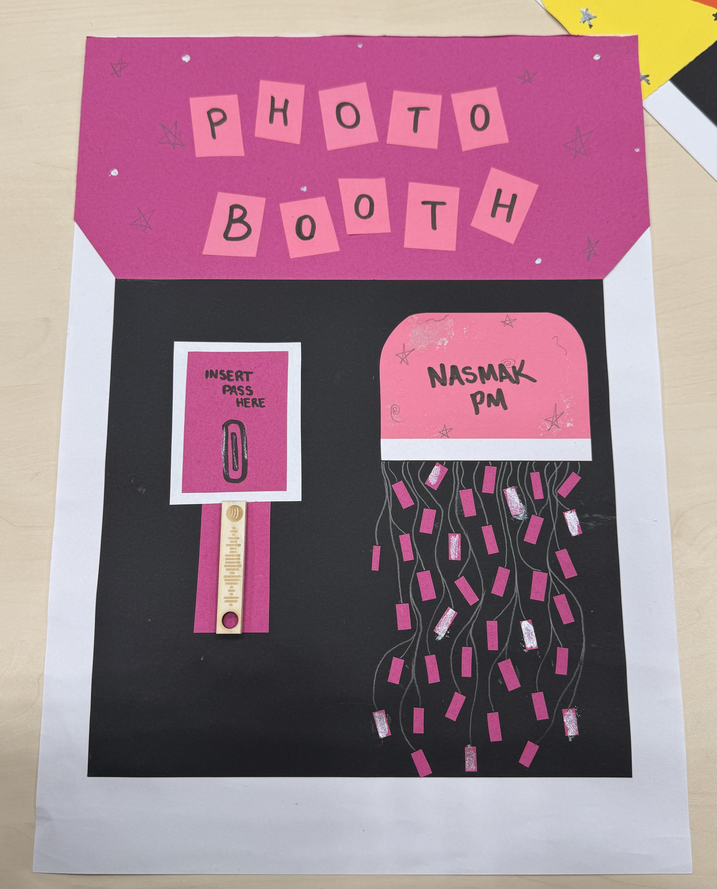

Project Details
Poster 1For the first poster I made, I wanted to match the theme of the band Nasmak’s website. I did some research about the band members so I could include pictures of them, and I also added an image I found online that fit the vibe. I picked an electric-font because it represents the electric instruments they use, which I thought was important for their audience to notice.
Poster 2For the second poster, I researched 'postpunk' and 'new wave,' which are the band’s genres. I noticed that the style for these genres includes sharp and colorful elements, so I chose ones that I thought were appealing and eye-catching. I also reused the electric font from the first poster to keep some consistency.
Poster 3This poster has a backstory: Nasmak PM had their very first practice in a chicken coop. To reflect that, I decided to include a chicken in the background. I went with a simple design but added a pop of red for contrast. To make it clear that the poster is for an upcoming event, I added an outline of a concert ticket to display the key information.


Photobooth Prototype
Miya came up with the idea of a photobooth for the band, so we both searched for images to include in the presentation to represent the concept. However, we eventually decided to create our own prototypes instead. I chose the color pink for my design to match the first poster I made, as she did the yellow.


Target Audience
I was assigned to write the target audience section for the band, so I did some research before starting. I included what the band told us about wanting to attract a younger audience to listen to their music.
In the document, I also wrote about where we could help them find this target group.
For example, using social media platforms like Instagram, TikTok, and YouTube, which are popular with younger people. I also suggested promoting the band through events or collaborations that younger audiences would be interested in, like music festivals or working with influencers in the post-punk and new wave scenes.
By combining my research with the band's input, I tried to create a plan that would help them reach the audience they want.

Instagram Page
I wanted to be assigned to create the updated Instagram page of the band because I enjoy working with social media and just in general stuff connected with it.
The first thing I changed was their bio. I felt the existing one had too much information, so I simplified it by adding just the key details about the band. I kept the profile picture the same because I think it’s really eyecatching and would make people curious to check out their page.
I also added highlights to make the page more organized and visually appealing. Each highlight had its own theme: the first one featured stories of the band performing or practicing, the second one was a QR code linking to their Instagram for easy sharing, and the last one was a Spotify highlight with their account and all of their released albums.
For the photos, I carefully selected a few images of the band from the internet, making sure they either had the same color palette or gave off a similar vibe.
Finally, I added some custom posters created by me and my group to give the page a unique touch.

Drink Stand
To help promote their band to a younger audience, I came up with the idea for setting up a drink stand where they can hand out free drinks like water, Coca-Cola, and Fanta, with custom labels featuring the band’s name. Eindhoven Centraal or Piazza would be ideal locations for this, as both are popular spots where young people gather and there are a lot of shops with people coming in and out of.